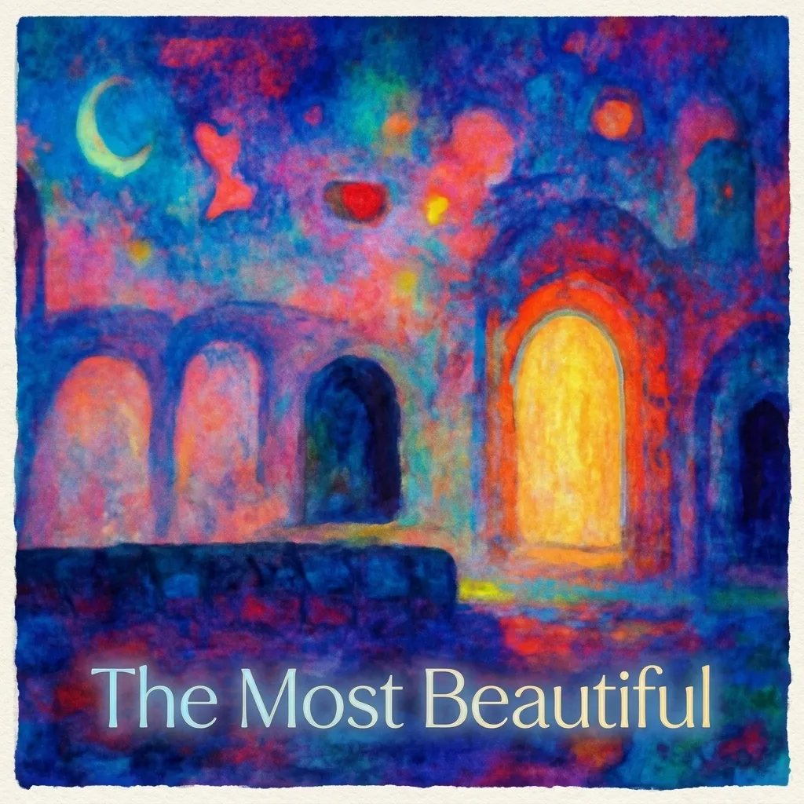

The Most Beautiful

焦りや羨望を抱えたまま、世界を包み込む美しさに身をゆだねる歌。
Lyricskeyboard_arrow_down
Before I knew it, another whole year slipped away from me
(You make it all worthwhile)
And still it's only me they leave behind, the same as it would always be
(You make it all worthwhile)
Now I'm circled all around by my friends
But this is time that I'd rather never spend
Still tomorrow waits for me up ahead
And I'll find a way to raise my head
Again and again until now I've pictured it, then let it fade away
(You make it all worthwhile)
And every time the wind would change its way, I'd bend and drift and sway
(You make it all worthwhile)
But right now there's something here I can't forget
Nothing in me now but envy and regret
Thinking that the things that aren't are really there
Reason doesn't make it clear, but it's there
The beauty of it changes all the world we know
So resting now is never a crime
There's nothing ever wrong in watching as it flows
Just give in to it all, let it climb
So beautiful, the way it all wraps me
With everything around, all I see
Just one more step ahead of me, I'm on my way
And everything in view will change someday